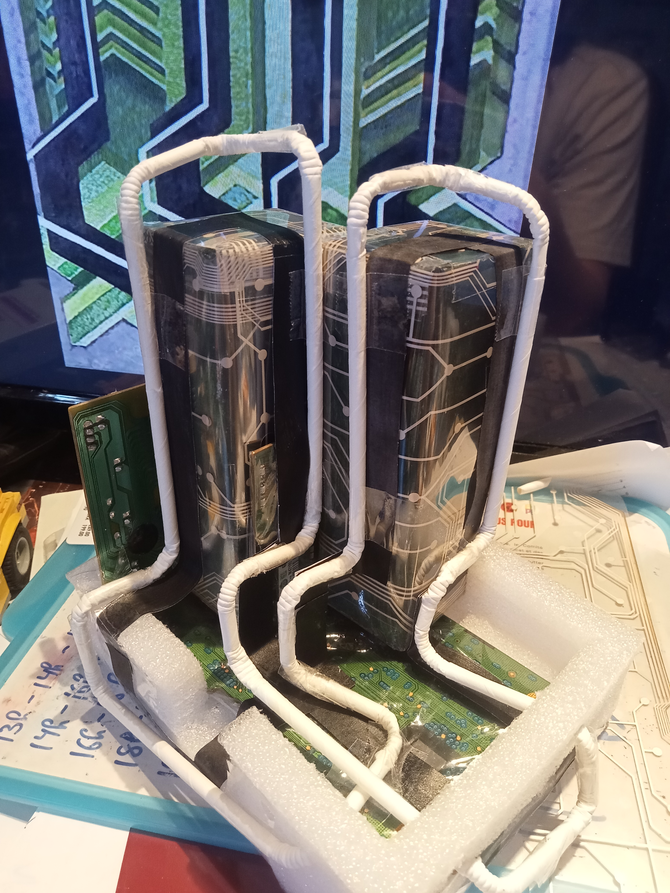

Projet E3 IMAC
TRAIT AUSTÈRE NUMÉRIQUE

Terminé
Langue :
Début du projet :
11/05/2026
Rendu du dossier :
14/06/2026
Matériaux & Outils
Composants PC / DVD
Briques CandyUp
Pailles & Peinture
Étudiant
Matthieu FARANDJIS
Documents
Présentation du contexte

Ce projet a été réalisé dans le cadre de nos cours d'Histoire de l'Art (art moderne) du 2ème semestre de la filière ingénieur IMAC.
Le cahier des charges était le suivant :
Sélectionner une œuvre créée entre 1904 et 1940 lors de la visite d'une exposition ou d'un musée.
Créer un dossier d'œuvre comprenant la fiche d'identité, la description et l'analyse de l'œuvre.
Produire une réappropriation de l'œuvre choisie avec un outil ou une démarche différente.
Je me suis rendu au Musée d'Arts modernes de Paris (Paris 16) le 23 mai 2026, où mon attention s'est portée sur le tableau Trait austère de František Kupka.
L'Œuvre et mon interprétation
Trait austère est une huile sur toile achevée en 1925. Kupka, pionnier de l'art abstrait, considérait après la guerre que la peinture imitative appartenait au passé. Il s'inspirait des sciences pour inventer de nouvelles formes. L'œuvre présente une esthétique très géométrique, dominée par la verticalité (un thème récurrent chez Kupka pour représenter le temps et le mouvement) et une palette réduite au vert, noir, blanc et gris.
Ce lien technologique et mathématique est d'ailleurs pertinent avec la démarche de l'artiste : Kupka explorait souvent des représentations mécaniques, et ses œuvres ont même fait l'objet d'études par des mathématiciens, comme Robert Cabane en 2018.
Démarche de Réappropriation
Trait austère me faisait penser aux barrettes de mémoire vive des ordinateurs.
On dirait qu’il y a deux formes vertes qui sont tenues à la verticale, sur une forme verte placée
à l’horizontale comme des barrettes de mémoire vive sur une carte mère. Une autre
ressemblance troublante, c’est l’aspect très géométrique ! On dirait vraiment qu’un circuit
électronique a été peint sur une toile.
Je suis peut-être l’un des rares à qui cette œuvre évoque l’électronique d’un ordinateur. C’est
sûrement le signe de ma grande passion pour l’informatique et les ordinateurs. Cela tombe
bien, je suis un IMAC !
Pour ma réappropriation, j’ai décidé de retranscrire mon ressenti.
Voici les étapes et matériaux utilisés pour la fabrication :
Les formes principales : J'ai récupéré et peint en noir des briques de lait (CandyUp) pour recréer la structure verticale imposante de la toile. J'ai encerclé les deux briques par les feuilles en plastique d'un clavier (la partie qui fait contact avec les touches).
Le circuit imprimé : J'ai ajouté le circuit noir à l'aide de bandes de papier peintes en noir, et le circuit blanc en utilisant les pailles blanches découpées et pliées provenant des briques de lait.
Le socle électronique : C'est la carte électronique d'un lecteur DVD de salon (plus précisément, la partie qui gère le bloc optique, le .
À travers cette démarche, je propose de montrer que l'abstraction de Kupka laisse le champ libre à l'imagination, permettant même d'y voir les prémices d'une esthétique numérique et électronique.
À propos
Cette page web a été structurée et rédigée avec l'aide de l'intelligence artificielle Gemini, à partir de mon dossier documentaire original. L'IA a été utilisée pour la mise en forme du code HTML, la synthèse de mes propres textes.
Certains extraits proviennent directement de mes travaux. J'ai réécrit certains passages. Mes travaux ont été fait sans l'aide de l'IA.
Galerie du projet